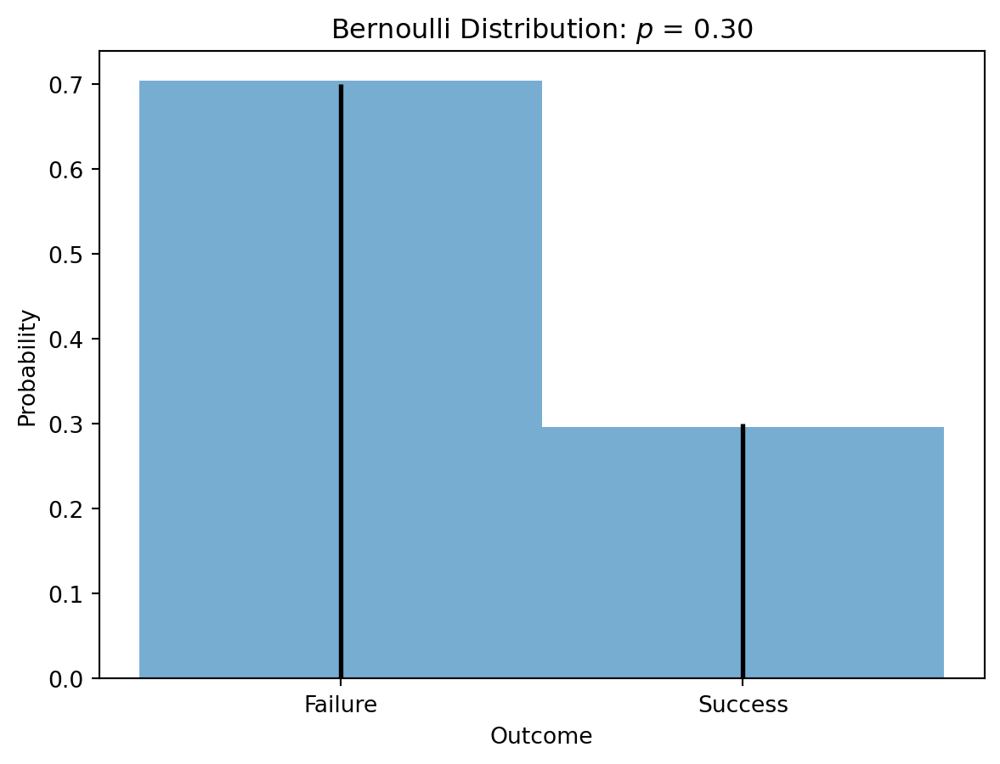
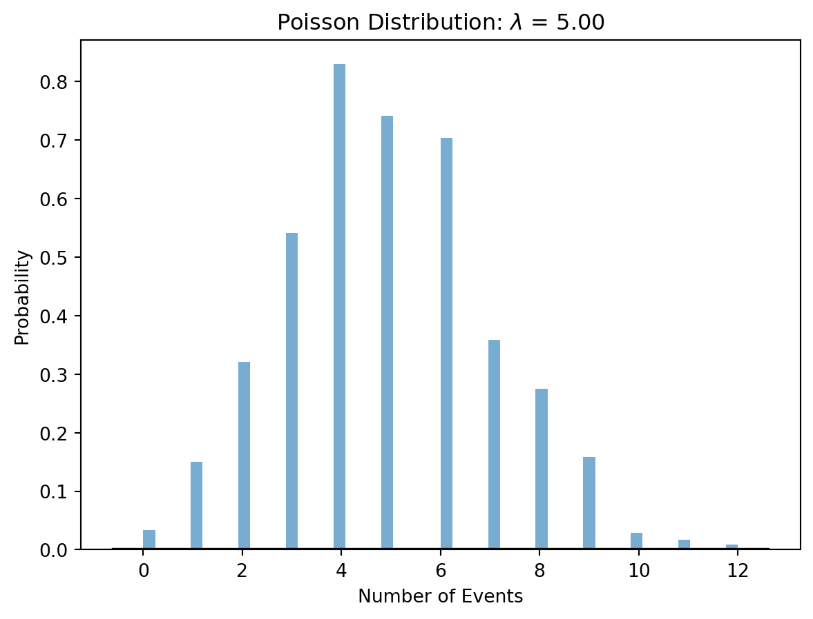
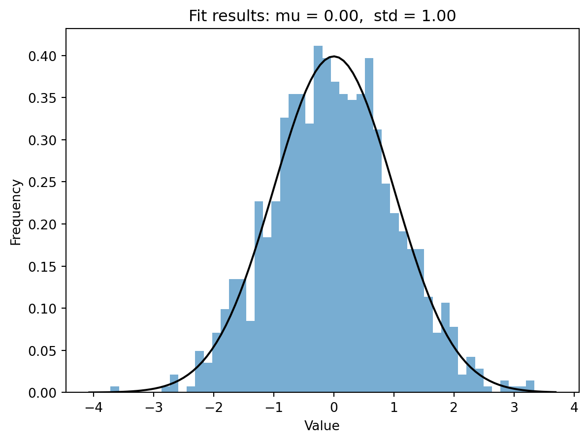
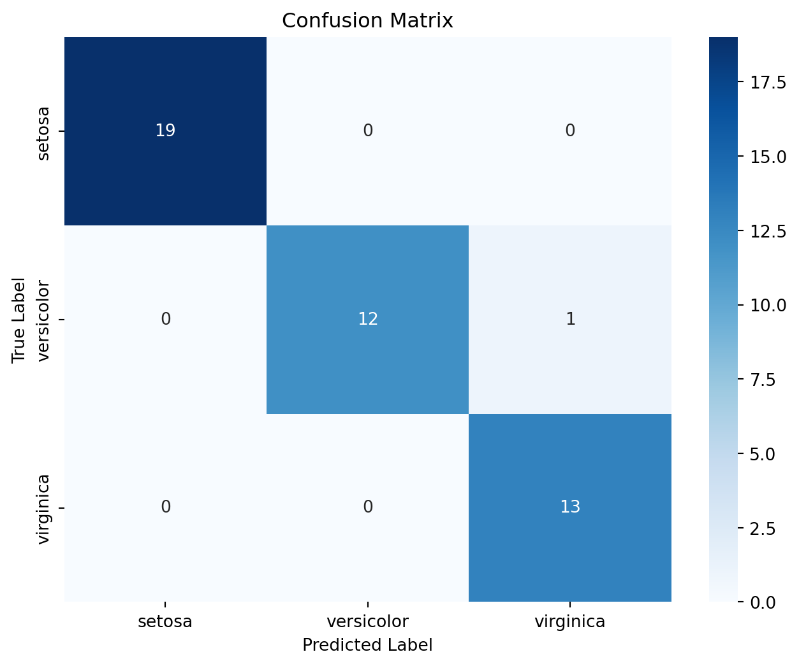

Machine learning frequently relies on probability theory and random variables to model uncertainty, make predictions, and inform decision-making. In this post, we’ll delve into key concepts in these domains.
Basic Concepts
Probability Theory: Probability in machine learning quantifies uncertainty, representing the likelihood of an event occurring, ranging from 0 (impossible) to 1 (certain). This is pivotal in algorithm design, often associated with outcomes of interest.
Conditional Probability: Probability of an event given another has occurred. Crucial in Bayesian methods.
Bayesian Inference: Uses Bayes’ theorem to update hypotheses’ probability with new evidence.
Random Variables: In probability theory, these are functions mapping outcomes to real values, classifying uncertainty.
Discrete Random Variables: Have countable distinct values, e.g., die outcomes.
Continuous Random Variables: Can take any value within a range, like height or temperature.
Probability Distributions: Describe how a random variable’s values are distributed. Key types include Joint, Marginal, and Conditional Distributions.
Bernoulli Distribution
The Bernoulli distribution models binary outcomes (0 or 1). Below is a Python example using scipy.stats.
Code
```{python}import numpy as npimport matplotlib.pyplot as pltfrom scipy.stats import bernoulli# Set the mean rate for the Poisson distributionp =0.3# Generate data for a Bernoulli distributiondata = np.random.choice([0, 1], size=1000, p=[1- p, p])# Create a histogramplt.hist(data, bins=[-0.5, 0.5, 1.5], density=True, alpha=0.6)# Plot the probability mass function (PMF) of the Bernoulli distributionx = [0, 1]pmf_values = bernoulli.pmf(x, p)plt.vlines(x, 0, pmf_values, colors='k', linestyles='-', lw=2)# Add labels and a titleplt.title('Bernoulli Distribution: $p$ = %.2f'% p)plt.xlabel('Outcome')plt.ylabel('Probability')plt.xticks([0, 1], ['Failure', 'Success'])plt.show()```

Poisson Distribution
Poisson distribution models event occurrences over a fixed period. Example code:
Code
```{python}import numpy as npimport matplotlib.pyplot as pltfrom scipy.stats import poisson# Set the mean rate for the Poisson distributionlam =5# Generate data for a Poisson distributiondata = np.random.poisson(lam, 1000)# Create a histogramplt.hist(data, bins=50, density=True, alpha=0.6)# Plot the probability mass function (PMF) of the Poisson distributionxmin, xmax = plt.xlim()x = np.linspace(xmin, xmax, 100)p = poisson.pmf(x, lam)plt.plot(x, p, 'k', linewidth=2)# Add labels and a titleplt.title('Poisson Distribution: $\lambda$ = %.2f'% lam)plt.xlabel('Number of Events')plt.ylabel('Probability')plt.show()```

Gaussian Distribution
The Gaussian distribution, or normal distribution, is versatile in probability theory. Example code:
Code
```{python}import numpy as npimport matplotlib.pyplot as pltfrom scipy.stats import normmu =0# meansigma =1# standard deviation# Generate data for a Gaussian distributiondata = np.random.normal(mu, sigma, 1000)# Create a histogramplt.hist(data, bins=50, density=True, alpha=0.6)# Plot the probability density function (PDF) of the Gaussian distributionxmin, xmax = plt.xlim()x = np.linspace(xmin, xmax, 100)p = norm.pdf(x, mu, sigma)plt.plot(x, p, 'k')# Add labels and a titleplt.title('Fit results: mu = %.2f, std = %.2f'% (mu, sigma))plt.xlabel('Value')plt.ylabel('Frequency')plt.show()```

Defining a Probability Distribution
Two classes: Discrete and Continuous Distributions. Discrete involves finite values; Continuous involves infinite values.
Classification with Gaussian Naive Bayes
A practical example of applying probability theory in machine learning using Gaussian Naive Bayes for Iris dataset classification.
Code
```{python}import numpy as npimport matplotlib.pyplot as pltfrom sklearn import datasetsfrom sklearn.model_selection import train_test_splitfrom sklearn.naive_bayes import GaussianNBfrom sklearn.metrics import accuracy_score, confusion_matrixfrom sklearn.preprocessing import StandardScalerimport seaborn as sns# Load the Iris datasetiris = datasets.load_iris()X = iris.datay = iris.target# Split the dataset into training and testing setsX_train, X_test, y_train, y_test = train_test_split(X, y, test_size=0.3, random_state=42)# Standardize the features (mean=0 and variance=1)scaler = StandardScaler()X_train = scaler.fit_transform(X_train)X_test = scaler.transform(X_test)# Train a Gaussian Naive Bayes classifiernb_classifier = GaussianNB()nb_classifier.fit(X_train, y_train)# Make predictions on the test sety_pred = nb_classifier.predict(X_test)# Evaluate the accuracyaccuracy = accuracy_score(y_test, y_pred)print(f'Accuracy: {accuracy:.2f}')# Plot the confusion matrix using seabornconf_matrix = confusion_matrix(y_test, y_pred)plt.figure(figsize=(8, 6))sns.heatmap(conf_matrix, annot=True, fmt="d", cmap="Blues", xticklabels=iris.target_names, yticklabels=iris.target_names)plt.title('Confusion Matrix')plt.xlabel('Predicted Label')plt.ylabel('True Label')plt.show()```
Accuracy: 0.98

Conclusion
Understanding probability theory and random variables is pivotal in various machine learning tasks, providing a natural framework to handle uncertainty in real-world data.
Source Code
---execute: echo: fencedtitle: "Probability theory and random variables"title-block-banner: falseauthor: Kamila Nurkhametova---# Probability Theory and Random VariablesMachine learning frequently relies on probability theory and random variables to model uncertainty, make predictions, and inform decision-making. In this post, we'll delve into key concepts in these domains.## Basic Concepts**Probability Theory:**Probability in machine learning quantifies uncertainty, representing the likelihood of an event occurring, ranging from 0 (impossible) to 1 (certain). This is pivotal in algorithm design, often associated with outcomes of interest.- **Conditional Probability:** Probability of an event given another has occurred. Crucial in Bayesian methods.- **Bayesian Inference:** Uses Bayes' theorem to update hypotheses' probability with new evidence.**Random Variables:**In probability theory, these are functions mapping outcomes to real values, classifying uncertainty.- **Discrete Random Variables:** Have countable distinct values, e.g., die outcomes.- **Continuous Random Variables:** Can take any value within a range, like height or temperature.**Probability Distributions:**Describe how a random variable's values are distributed. Key types include Joint, Marginal, and Conditional Distributions.## Bernoulli DistributionThe Bernoulli distribution models binary outcomes (0 or 1). Below is a Python example using `scipy.stats`.```{python}import numpy as npimport matplotlib.pyplot as pltfrom scipy.stats import bernoulli# Set the mean rate for the Poisson distributionp =0.3# Generate data for a Bernoulli distributiondata = np.random.choice([0, 1], size=1000, p=[1- p, p])# Create a histogramplt.hist(data, bins=[-0.5, 0.5, 1.5], density=True, alpha=0.6)# Plot the probability mass function (PMF) of the Bernoulli distributionx = [0, 1]pmf_values = bernoulli.pmf(x, p)plt.vlines(x, 0, pmf_values, colors='k', linestyles='-', lw=2)# Add labels and a titleplt.title('Bernoulli Distribution: $p$ = %.2f'% p)plt.xlabel('Outcome')plt.ylabel('Probability')plt.xticks([0, 1], ['Failure', 'Success'])plt.show()```## Poisson DistributionPoisson distribution models event occurrences over a fixed period. Example code:```{python}import numpy as npimport matplotlib.pyplot as pltfrom scipy.stats import poisson# Set the mean rate for the Poisson distributionlam =5# Generate data for a Poisson distributiondata = np.random.poisson(lam, 1000)# Create a histogramplt.hist(data, bins=50, density=True, alpha=0.6)# Plot the probability mass function (PMF) of the Poisson distributionxmin, xmax = plt.xlim()x = np.linspace(xmin, xmax, 100)p = poisson.pmf(x, lam)plt.plot(x, p, 'k', linewidth=2)# Add labels and a titleplt.title('Poisson Distribution: $\lambda$ = %.2f'% lam)plt.xlabel('Number of Events')plt.ylabel('Probability')plt.show()```## Gaussian DistributionThe Gaussian distribution, or normal distribution, is versatile in probability theory. Example code:```{python}import numpy as npimport matplotlib.pyplot as pltfrom scipy.stats import normmu =0# meansigma =1# standard deviation# Generate data for a Gaussian distributiondata = np.random.normal(mu, sigma, 1000)# Create a histogramplt.hist(data, bins=50, density=True, alpha=0.6)# Plot the probability density function (PDF) of the Gaussian distributionxmin, xmax = plt.xlim()x = np.linspace(xmin, xmax, 100)p = norm.pdf(x, mu, sigma)plt.plot(x, p, 'k')# Add labels and a titleplt.title('Fit results: mu = %.2f, std = %.2f'% (mu, sigma))plt.xlabel('Value')plt.ylabel('Frequency')plt.show()```## Defining a Probability DistributionTwo classes: Discrete and Continuous Distributions. Discrete involves finite values; Continuous involves infinite values.## Classification with Gaussian Naive BayesA practical example of applying probability theory in machine learning using Gaussian Naive Bayes for Iris dataset classification.```{python}import numpy as npimport matplotlib.pyplot as pltfrom sklearn import datasetsfrom sklearn.model_selection import train_test_splitfrom sklearn.naive_bayes import GaussianNBfrom sklearn.metrics import accuracy_score, confusion_matrixfrom sklearn.preprocessing import StandardScalerimport seaborn as sns# Load the Iris datasetiris = datasets.load_iris()X = iris.datay = iris.target# Split the dataset into training and testing setsX_train, X_test, y_train, y_test = train_test_split(X, y, test_size=0.3, random_state=42)# Standardize the features (mean=0 and variance=1)scaler = StandardScaler()X_train = scaler.fit_transform(X_train)X_test = scaler.transform(X_test)# Train a Gaussian Naive Bayes classifiernb_classifier = GaussianNB()nb_classifier.fit(X_train, y_train)# Make predictions on the test sety_pred = nb_classifier.predict(X_test)# Evaluate the accuracyaccuracy = accuracy_score(y_test, y_pred)print(f'Accuracy: {accuracy:.2f}')# Plot the confusion matrix using seabornconf_matrix = confusion_matrix(y_test, y_pred)plt.figure(figsize=(8, 6))sns.heatmap(conf_matrix, annot=True, fmt="d", cmap="Blues", xticklabels=iris.target_names, yticklabels=iris.target_names)plt.title('Confusion Matrix')plt.xlabel('Predicted Label')plt.ylabel('True Label')plt.show()```## ConclusionUnderstanding probability theory and random variables is pivotal in various machine learning tasks, providing a natural framework to handle uncertainty in real-world data.